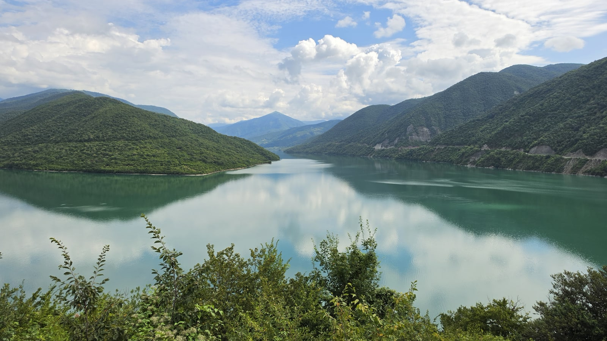
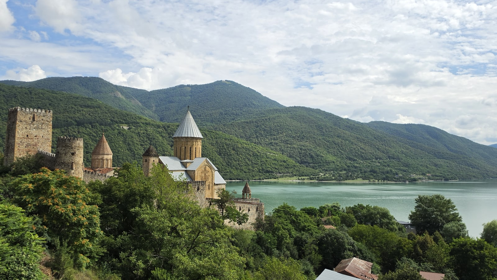
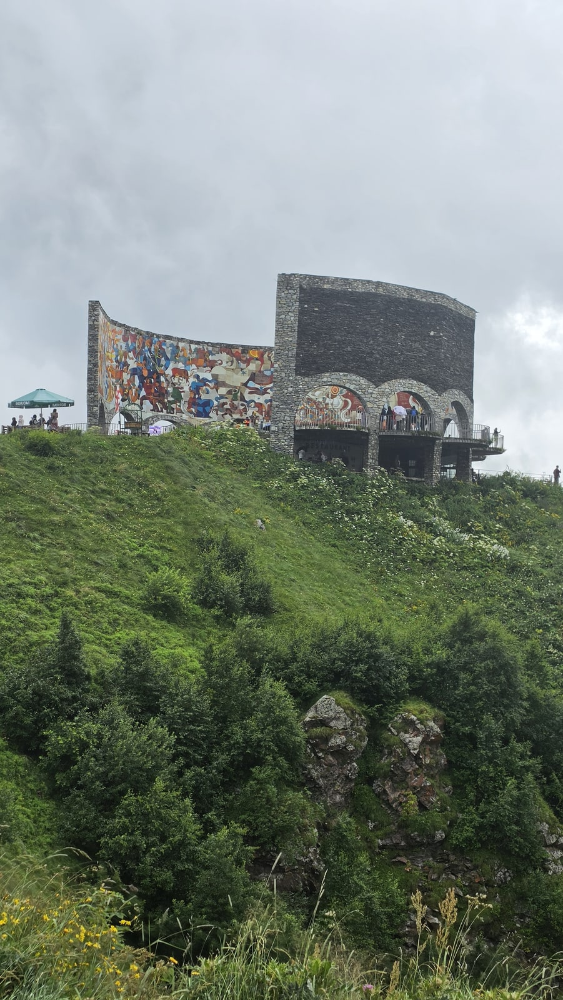
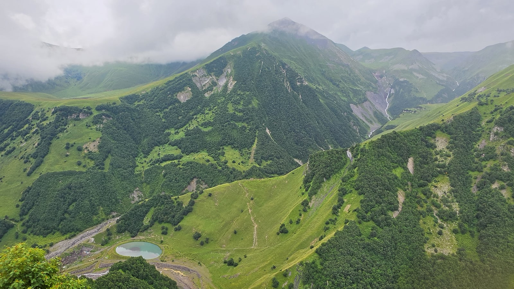
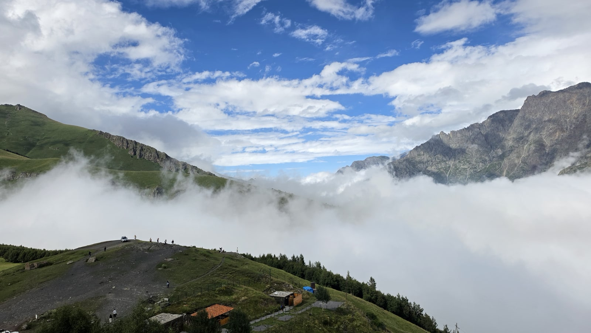

<meta charset="utf-8">
<title>카즈베기 일일 투어 — 아나누리·구다우리·게르게티 — 나의 투자 그리고 행복한 여행</title>
<meta name="description" content="트빌리시 출발 카즈베기 일일 버스 투어(28,300원) 실제 동선: 진발리 저수지, 아나누리, 구다우리 우호 기념비, 게르게티 성당(2,170m).">
<meta name="viewport" content="width=device-width, initial-scale=1">
<link rel="canonical" href="https://worldtraveler1.tistory.com/52">
<link rel="preconnect" href="https://fonts.googleapis.com">
<link rel="preconnect" href="https://fonts.gstatic.com" crossorigin>
<link rel="stylesheet" href="https://fonts.googleapis.com/css2?family=Hahmlet:wght@400;600;800&family=IBM+Plex+Mono:wght@400;500&family=IBM+Plex+Sans+KR:wght@300;400;500;600&display=swap">

<style>
  :root{
    --paper:#F2EEE6;--surface:#FAF8F3;--surface-2:#E7E1D5;
    --ink:#191510;--ink-2:#4A4235;--ink-3:#7D7364;
    --line:#D6CEBF;--line-soft:#E4DDD0;--accent:#B06A15;--accent-bright:#C2761A;
    --up:#E5484D;--down:#3B82F6;
    --f-display:"Hahmlet",'Nanum Myeongjo',"Apple SD Gothic Neo",serif;
    --f-body:"IBM Plex Sans KR","Apple SD Gothic Neo","Malgun Gothic",sans-serif;
    --f-mono:"IBM Plex Mono","SFMono-Regular",Consolas,monospace;
    --pad:clamp(20px,5vw,64px);
  }
  @media (prefers-color-scheme:dark){
    :root:not([data-theme="light"]){
      --paper:#0B1120;--surface:#121A2C;--surface-2:#1A2439;
      --ink:#E9EEF7;--ink-2:#A9B5C9;--ink-3:#72809A;
      --line:#26314A;--line-soft:#1D2739;--accent:#E8A33D;--accent-bright:#F0B45C;
    }
  }
  *{box-sizing:border-box;}
  body{margin:0;background:var(--paper);color:var(--ink);font-family:var(--f-body);
    font-weight:300;font-size:1rem;line-height:1.75;-webkit-font-smoothing:antialiased;}
  a{color:inherit;}
  img{max-width:100%;height:auto;}
  .wrap{max-width:760px;margin:0 auto;padding-inline:var(--pad);}
  .nav{position:sticky;top:0;z-index:20;background:color-mix(in srgb,var(--paper) 88%,transparent);
    backdrop-filter:saturate(180%) blur(12px);border-bottom:1px solid var(--line);}
  .nav-in{display:flex;align-items:center;justify-content:space-between;height:58px;}
  .brand{font-family:var(--f-display);font-weight:600;font-size:1rem;letter-spacing:-.02em;text-decoration:none;}
  .back{font-family:var(--f-mono);font-size:.72rem;color:var(--ink-3);text-decoration:none;}
  .article{padding-block:clamp(40px,7vw,72px) clamp(56px,9vw,96px);}
  .eyebrow{font-family:var(--f-mono);font-size:.68rem;letter-spacing:.16em;text-transform:uppercase;
    color:var(--accent);margin:0 0 14px;}
  h1{font-family:var(--f-display);font-weight:800;font-size:clamp(1.6rem,4.4vw,2.3rem);
    line-height:1.3;letter-spacing:-.03em;margin:0 0 16px;}
  .byline{font-family:var(--f-mono);font-size:.72rem;color:var(--ink-3);
    padding-bottom:24px;border-bottom:1px solid var(--line);margin-bottom:32px;}
  h2{font-family:var(--f-display);font-weight:600;font-size:1.25rem;letter-spacing:-.02em;margin:42px 0 14px;}
  h3{font-family:var(--f-display);font-weight:600;font-size:1.05rem;letter-spacing:-.02em;
    margin:30px 0 10px;padding-top:14px;border-top:1px solid var(--line-soft);}
  h3 .code{font-family:var(--f-mono);font-size:.7rem;font-weight:400;color:var(--ink-3);margin-left:6px;}
  p{margin:0 0 18px;color:var(--ink-2);}
  ul.checks{margin:0 0 18px;padding-left:20px;color:var(--ink-2);}
  ul.checks li{margin-bottom:8px;font-size:.94rem;}
  table{width:100%;border-collapse:collapse;font-size:.88rem;margin-bottom:8px;}
  th{font-family:var(--f-mono);font-size:.66rem;letter-spacing:.06em;text-transform:uppercase;
    color:var(--ink-3);text-align:right;padding:8px 6px;border-bottom:1px solid var(--line);}
  th:first-child{text-align:left;}
  td{padding:10px 6px;border-bottom:1px solid var(--line-soft);color:var(--ink-2);}
  td.num{font-family:var(--f-mono);text-align:right;font-variant-numeric:tabular-nums;}
  td.up{color:var(--up);} td.down{color:var(--down);}
  .scroll{overflow-x:auto;}
  figure{margin:22px 0;}
  figure img{display:block;border-radius:3px;background:var(--surface-2);}
  figcaption{margin-top:8px;font-family:var(--f-mono);font-size:.68rem;color:var(--ink-3);text-align:center;}
  .note{margin-top:34px;padding:16px 18px;border-left:3px solid var(--accent);
    background:var(--surface);border-radius:0 3px 3px 0;}
  .note p{margin:0;font-size:.85rem;color:var(--ink-3);}
  .foot{border-top:1px solid var(--line);background:var(--surface);padding-block:30px 38px;}
  .foot p{margin:0;font-size:.8rem;color:var(--ink-3);}
</style>

<nav class="nav">
  <div class="wrap nav-in">
    <a class="brand" href="../index.html">나의 투자 그리고 행복한 여행</a>
    <a class="back" href="../index.html#stocks">← 시황으로</a>
  </div>
</nav>

<main class="wrap article">
  <p class="eyebrow">Market</p>
  <h1>카즈베기 일일 투어 기록 (2026.8.14) — 경유지별 시각과 요금</h1>
  <p class="byline">여행 · 2026-09-14 기준</p>

  <p>한 줄 요약: 클룩 조인 버스 투어(28,300원)로 진발리 저수지(10:14) → 아나누리(10:47) → 구다우리 우호 기념비(14:15) → 게르게티 삼위일체 성당(15:33)을 다녀왔습니다.</p>
  <p>시각은 사진 촬영 시각이며, 사진이 없는 시간대는 비워 두었습니다. 거리·고도·연대는 위키백과 기준입니다.</p>
  <p>※ 이 글에는 클룩 제휴 링크가 들어 있습니다. 링크를 통해 예약하시면 글쓴이가 일정 수수료를 받을 수 있으며, 예약하시는 가격은 같습니다.</p>
  <figure><figcaption>해발 2,170m의 게르게티 삼위일체 성당 (2026.8.14 15:56 촬영)</figcaption></figure>
  <h2>이날 동선 한눈에 보기</h2>
  <ul class="checks">
    <li>10:14~10:24  진발리 저수지 전망대</li>
    <li>10:47~11:09  아나누리 요새</li>
    <li>11:09~14:15  (사진 없음 — 이동 구간)</li>
    <li>14:15~14:28  구다우리, 러시아-조지아 우호 기념비 (흐림)</li>
    <li>14:28~15:33  (사진 없음 — 이동 구간)</li>
    <li>15:33~15:56  게르게티 삼위일체 성당 일대</li>
  </ul>
  <p>출발·귀환 시각과 점심은 기록이 없어 적지 않았습니다. 그날 밤 21시 27분 트빌리시에서 폭우를 찍은 사진이 있으니, 저녁에는 시내로 돌아와 있었습니다.</p>
  <div class="note"><p>오전에 두 곳(저수지, 아나누리)을 보고, 긴 산길을 올라 오후에 구다우리와 게르게티를 보는 구성입니다. 투어 대부분이 이 순서입니다.</p></div>
  <h2>10:14 진발리 저수지 — 첫 번째 정차</h2>
  <figure><figcaption>진발리 저수지 전망대. 청록색 물이 산 사이에 넓게 펼쳐집니다 (2026.8.14 10:17 촬영)</figcaption></figure>
  <p>트빌리시에서 조지아 군사도로를 따라 북쪽으로 올라가다 처음 멈추는 곳이 진발리 저수지 전망대입니다. 약 10분 머물렀습니다.</p>
  <h2>10:47 아나누리 요새 — 호숫가의 성채</h2>
  <figure><figcaption>진발리 저수지 옆 아나누리 요새 (2026.8.14 11:04 촬영)</figcaption></figure>
  <p>아나누리는 트빌리시에서 약 72km 떨어진 요새로, 안에 17세기 성당이 있습니다. 성벽과 망루가 저수지를 내려다보는 자리에 서 있습니다.</p>
  <p>여기서 20분 남짓 머물렀습니다. 성벽 안 성당과 망루를 둘러보기에 빠듯하지 않은 시간입니다.</p>
  <h2>14:15 구다우리 — 흐린 하늘 아래 우정 기념비</h2>
  <figure><figcaption>흐린 하늘 아래 러시아-조지아 우호 기념비. 반원형 벽에 타일 모자이크가 있습니다 (2026.8.14 14:15 촬영)</figcaption></figure>
  <p>아나누리를 떠나 사진이 없는 세 시간을 지나 도착한 곳이 구다우리 근처의 러시아-조지아 우호 기념비입니다. 1983년, 게오르기옙스크 조약 200주년을 기념해 세운 반원형 전망대로, 벽에 타일 모자이크가 있습니다.</p>
  <p>기념비 앞으로 깊은 계곡이 내려다보입니다. 이날은 하늘이 흐리고 높은 봉우리들이 구름에 가려 있었습니다.</p>
  <figure><figcaption>우호 기념비에서 내려다본 계곡. 봉우리 위에 구름이 걸려 있습니다 (2026.8.14 14:21 촬영)</figcaption></figure>
  <p>이 근처가 조지아 군사도로의 가장 높은 구간입니다. 즈바리 고개가 해발 2,379m입니다. 트빌리시가 더워도 여기서는 겉옷이 필요할 수 있습니다.</p>
  <h2>15:33 게르게티 삼위일체 성당 — 구름 위의 교회</h2>
  <figure><figcaption>게르게티 쪽에서 내려다본 계곡. 구름이 발아래 깔려 있습니다 (2026.8.14 15:48 촬영)</figcaption></figure>
  <p>카즈베기 투어의 목적지입니다. 스테판츠민다(카즈베기) 마을 위, 해발 2,170m 언덕에 14세기에 지어진 게르게티 삼위일체 성당이 있습니다. 마을 자체도 해발 1,740m입니다.</p>
  <p>15시 33분부터 56분까지 20여 분 이 일대에 있었습니다. 성당 옆 언덕에서 보니 아래 계곡이 구름으로 가득 차 있고, 그 위로 파란 하늘과 바위산이 드러나 있었습니다.</p>
  <p>맑은 날에는 성당 뒤로 카즈베크산(해발 5,000m가 넘는 설산)이 보이는 것으로 유명합니다. 제 사진에는 이 설산이 나오지 않습니다. 성당 쪽 하늘은 구름이 두꺼웠습니다.</p>
  <div class="note"><p>산 날씨는 한 시간 사이에도 바뀝니다. 구다우리의 흐린 하늘과 게르게티의 구름바다가 한 시간 간격이었습니다. 설산을 꼭 보고 싶다면 날짜를 여유 있게 두고 날씨를 보며 고르세요.</p></div>
  <h2>투어 vs 개별 이동 — 뭐가 나을까</h2>
  <p><b>조인 투어</b> — 제가 낸 금액은 28,300원(2026년 8월 예약 당시, 약 52라리)입니다. 진발리·아나누리·구다우리를 알아서 세워 주니 한 번에 다 볼 수 있습니다. 대신 각 지점 체류 시간이 정해져 있습니다. 제 경우 지점마다 10~20분 정도였습니다.</p>
  <div style="text-align:center;margin:30px 0"><a href="https://affiliate.klook.com/redirect?aid=135164&aff_adid=1430619&k_site=https%3A%2F%2Fwww.klook.com%2Fko%2Factivity%2F107209-tbilisi-kazbegi-gudauri-zhinvali-guided-group-tour%2F" target="_blank" rel="nofollow sponsored noopener" style="display:inline-block;padding:15px 28px;background:#E34948;color:#fff;font-weight:700;font-size:18px;text-decoration:none;border-radius:8px"><b>▶ 클룩에서 제가 예약한 카즈베기 투어 보기 (제휴 링크)</b></a></div>
  <p><b>마슈르트카(미니버스)</b> — 트빌리시 디두베 터미널에서 스테판츠민다행이 다닙니다. 여행 가이드들의 안내로는 현금 15~20라리, 약 3~3.5시간입니다. 싸지만 중간 경유지를 들르지 않고, 게르게티까지는 현지에서 따로 올라가야 합니다.</p>
  <ul class="checks">
    <li>하루 만에 경유지까지 다 보고 싶다 — 조인 투어</li>
    <li>카즈베기에서 1박 이상 하며 트레킹하고 싶다 — 마슈르트카 + 현지 숙박</li>
    <li>일행이 3~4명이다 — 기사 딸린 차량 대절도 비교해볼 만합니다</li>
  </ul>
  <h2>가기 전에 알아둘 것</h2>
  <ul class="checks">
    <li>트빌리시 출발 기준 왕복 하루가 꼬박 걸리는 일정입니다. 다음 날 일정은 가볍게 잡는 편이 낫습니다</li>
    <li>고도가 높아 트빌리시보다 서늘합니다. 한여름에도 얇은 겉옷을 챙기세요</li>
    <li>산길이 길고 굽이가 많습니다. 멀미가 있다면 약을 챙기세요</li>
    <li>늦가을부터 봄까지는 눈 때문에 도로가 통제될 수 있습니다. 이 시기에는 투어 진행 여부를 먼저 확인하세요</li>
    <li>성당 방문 시에는 노출이 적은 옷차림이 무난합니다</li>
  </ul>
  <h2>자주 묻는 질문</h2>
  <p><b>카즈베기 투어 가격은 얼마인가요?</b></p>
  <p>제가 클룩에서 예약한 일일 버스 투어(아나누리·구다우리 경유)는 1인 28,300원이었습니다(2026년 8월 여행, 예약 당시 가격). 시기와 상품에 따라 달라집니다.</p>
  <p><b>트빌리시에서 카즈베기까지 얼마나 걸리나요?</b></p>
  <p>스테판츠민다까지 157km로, 마슈르트카 기준 약 3~3.5시간입니다. 투어는 중간 경유지를 들르기 때문에 더 걸립니다. 제 경우 아나누리를 11시 9분에 떠나 구다우리 기념비에 14시 15분에 도착했습니다.</p>
  <p><b>게르게티 성당은 어느 정도 고도인가요?</b></p>
  <p>해발 2,170m입니다. 아래 마을이 1,740m이고, 가는 길의 즈바리 고개가 2,379m입니다.</p>
  <p><b>흐린 날 가도 괜찮나요?</b></p>
  <p>제가 간 날이 흐렸습니다. 구다우리에서는 봉우리가 구름에 가렸고, 게르게티에서는 구름이 발아래 계곡을 채웠습니다. 설산 전경은 못 봤지만 구름바다는 봤습니다. 날짜 여유가 있다면 날씨를 보고 고르는 게 좋습니다.</p>
  <h2>정리하면</h2>
  <p>카즈베기는 트빌리시에서 당일로 다녀올 수 있는 가장 극적인 풍경입니다. 저수지, 요새, 고갯길, 산 위의 성당이 하루에 이어집니다.</p>
  <p>조인 투어는 경유지를 한 번에 볼 수 있다는 게 가장 큰 장점입니다. 산 날씨는 운에 맡겨야 하니 겉옷 하나 챙기고 가시기 바랍니다.</p>
  <div style="text-align:center;margin:30px 0"><a href="https://danielmoon82.github.io/moon/posts/kakheti-wine-tour-2026-09-14.html" target="_blank" rel="nofollow sponsored noopener" style="display:inline-block;padding:15px 28px;background:#E34948;color:#fff;font-weight:700;font-size:18px;text-decoration:none;border-radius:8px"><b>▶ 카헤티 와인 투어 기록 보기</b></a></div>
  <div style="text-align:center;margin:30px 0"><a href="https://danielmoon82.github.io/moon/posts/georgia-travel-guide-2026-09-14.html" target="_blank" rel="nofollow sponsored noopener" style="display:inline-block;padding:15px 28px;background:#E34948;color:#fff;font-weight:700;font-size:18px;text-decoration:none;border-radius:8px"><b>▶ 조지아 여행 준비 총정리 보기</b></a></div>
  <p style="font-size:12px;color:#999;line-height:1.6;margin-top:36px">방문 날짜와 시각은 2026년 8월 12~20일 여행 중 찍은 사진의 촬영 시각(조지아 현지 시각)으로 확인했습니다. 요금·운영 정보는 2026년 9월 13~14일에 확인한 공개 정보이며 바뀔 수 있습니다. 원화 환산은 조지아 중앙은행 2026년 8월 14일 환율(1,000원 = 1.8403라리)로 계산한 대략치입니다. 투어 금액은 2026년 8월 여행 때 클룩에서 결제한 실제 금액입니다. 거리·고도·연대는 위키백과, 마슈르트카 요금은 여행 가이드들의 공통 안내를 참고했습니다.</p>
</main>

<footer class="foot">
  <div class="wrap"><p>나의 투자 그리고 행복한 여행 · 투자 판단의 참고 자료일 뿐, 매수·매도를 권유하지 않습니다.</p></div>
</footer>
